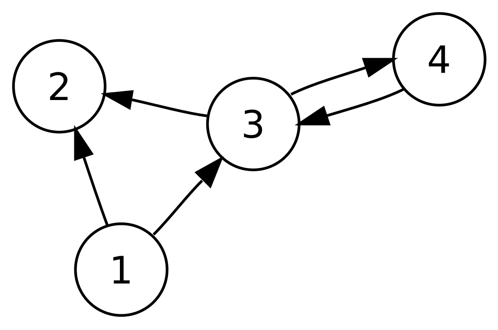

Graphs and Their Types
Introduction to Graphs
A graph is a data structure that represents a set of objects where some pairs of objects are connected by links. These objects are called vertices or nodes, and the links connecting them are called edges. Graphs are widely used to represent relationships between different entities and are employed in various fields such as computer science, mathematics, social networks, and transportation networks.
Types of Graphs
1. Undirected Graph

An undirected graph is a graph where edges have no direction. The edges represent symmetric relationships, and traversal is possible in both directions between any two vertices.
Explanation:
In an undirected graph, the edges between vertices do not have any direction associated with them. They represent a symmetric relationship, meaning that traversal is possible in both directions. For example, if there is an edge between vertex A and vertex B, it implies that you can move from A to B or from B to A.
2. Directed Graph (Digraph)

A directed graph is a graph where edges have a direction. The edges represent asymmetric relationships, and traversal is only possible in the direction specified by the edges.
Explanation:
In a directed graph, the edges between vertices have a specific direction associated with them. They represent an asymmetric relationship, meaning that traversal is only possible in the direction specified by the edges. For example, if there is an edge from vertex A to vertex B, it implies that you can move from A to B but not from B to A.
3. Weighted Graph
A weighted graph is a graph where edges have weights or values associated with them. These weights can represent various quantities such as distances, costs, or capacities, depending onthe application.
Explanation:
In a weighted graph, each edge has a weight or value associated with it. These weights can represent different quantities depending on the context of the graph. For example, in a graph representing a transportation network, the weights could represent distances between cities. In a graph representing a financial network, the weights could represent the cost of transactions between nodes. Weighted graphs are used when additional information or measurements need to be considered along with the connectivity between vertices.
4. Cyclic Graph
A cyclic graph is a graph that contains at least one cycle, which is a path that starts and ends at the same vertex.
Explanation:
In a cyclic graph, there exists at least one cycle, which is a path that starts and ends at the same vertex. A cycle represents a closed loop within the graph where you can traverse from one vertex back to itself by following a sequence of edges. Cyclic graphs can have multiple cycles and are characterized by the presence of these closed loops.
5. Acyclic Graph
An acyclic graph is a graph that does not contain any cycles.
Explanation:
In an acyclic graph, there are no cycles present. This means that there are no paths that start and end at the same vertex. Acyclic graphs are also known as directed acyclic graphs (DAGs) and find applications in areas such as task scheduling, dependency management, and directed acyclic word graphs (DAWGs).
6. Bipartite Graph
A bipartite graph is a graph whose vertices can be divided into two disjoint sets, such that there are no edges between vertices within the same set.
Explanation:
In a bipartite graph, the vertices can be divided into two separate sets such that there are no edges connecting vertices within the same set. In other words, the graph can be partitioned into two independent sets, and all the edges connect vertices from one set to the other. Bipartite graphs find applications in various fields such as scheduling problems, matching algorithms, and graph coloring.
7. Complete Graph
A complete graph is a graph where each pair of distinct vertices is connected by a unique edge.
Explanation:
In a complete graph, every pair of distinct vertices is connected by a unique edge. This means that there is an edge between every possible pair of vertices in the graph. Complete graphs have the maximum number of edges for a given number of vertices and are denoted by the symbol "K" followed by the number of vertices. For example, K5 represents a complete graph with 5 vertices.
8. Connected Graph
A connected graph is a graph where there is a path between every pair of vertices.
Explanation:
In a connected graph, there exists a path between every pair of vertices. This means that you can start at any vertex and reach any other vertex in the graph by following a sequence of edges. Connected graphs are characterized by the absence of isolated vertices or disconnected components. They represent a unified structure where every vertex is reachable from every other vertex.
9. Disconnected Graph

A disconnected graph is a graph that contains two or more connected components, where there is no path between vertices in different components.
Explanation:
In a disconnected graph, there are two or more connected components, which are subgraphs where there is no path between vertices in different components. Each connected component represents a separate cluster of vertices that are connected internally but not externally to vertices in other components. Disconnected graphs consist of isolated subgraphs that are not connected to each other.